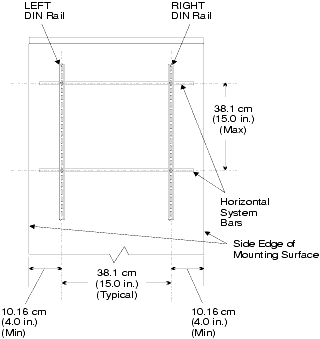

Figure from page 515 (page 515)

Figure from page 522 (page 522)
Source: DeltaV M-series Hardware Installation and Reference Manual, Emerson D800001X312, April 2021 — Appendix N

| Document | Required Details |
|---|---|
| Control Network Diagram | Equipment location, cable routing, cable lengths, connector types at each end, cable manufacturer/type, boot color, certification reports for 10BaseT and fiber-optic cables |
| Power & Ground Diagram | Power supply locations, power sizing calculations, wiring routing, wiring gauges and lengths, current flow (measured after startup) |
| Enclosure Documentation | Sizing and heat rise calculations |
| I/O Slot Register | I/O terminal block and I/O card type for each slot |
The DeltaV installation worksheets follow a sequential workflow to determine total power requirements. Each worksheet feeds into the next.
Table N-1 (12V + 24V products) → Subtotal 1Table N-2 (24V-only products) → Subtotal 2Table N-3 or N-4 (system power) → Grand TotalTable N-5 (bulk power) → Number of bulk suppliesTable N-6 (I.S. power, if applicable) → Add to Subtotal 2
| Rule | Limit |
|---|---|
| Horizontal carrier max current | 8 A |
| Vertical carrier max current | 15 A |
| System power supply max | 13 A (12V input) or 8A (24V input) |
| Redundant power | Must include calculations for redundant system power |
This is the primary worksheet for most I/O cards and controllers. Record quantities and multiply by per-product amperage.
| Product | 12V LocalBus (A) | 24VDC Field (A) |
|---|---|---|
| Controllers | 0.01 | 0.01 |
| Remote Interface Unit | 0.01 | 0.01 |
| Product | 12V LocalBus (A) | 24VDC Field (A) |
|---|---|---|
| AI, 8-Channel, 4-20 mA | 0.150 | 0.300 |
| AI, 8-Channel, 4-20 mA, HART | 0.150 | 0.300 |
| AI, 8-Channel, 1-5 VDC | 0.150 | 0.100 |
| AO, 8-Channel, 4-20 mA | 0.150 | 0.300 |
| AO, 8-Channel, 4-20 mA, HART | 0.150 | 0.300 |
| RTD, ohms | 0.160 | N/A |
| Thermocouple, mV | 0.350 | N/A |
| Multifunction | 0.250 | N/A |
| Product | 12V LocalBus (A) | 24VDC Field (A) |
|---|---|---|
| DI, 8-Channel, 24 VDC, Isolated | 0.100 | N/A |
| DI, 8-Channel, 24 VDC, Dry Contact | 0.100 | 0.040 |
| DI, 8-Channel, 120 VAC, Isolated | 0.100 | N/A |
| DI, 8-Channel, 120 VAC, Dry Contact | 0.100 | N/A |
| DI, 8-Channel, 230 VAC, Isolated | 0.100 | N/A |
| DI, 8-Channel, 230 VAC, Dry Contact | 0.100 | N/A |
| DI, 32-Channel, 24 VDC, Dry Contact | 0.075 | 0.150 |
| DO, 8-Channel, 120/230 VAC, Isolated | 0.150 | N/A |
| DO, 8-Channel, 120/230 VAC, High Side | 0.150 | N/A |
| DO, 8-Channel, 24 VDC, Isolated | 0.150 | N/A |
| DO, 8-Channel, 24 VDC, High Side | 0.150 | Depends on field (max 3A total) |
| DO, 32-Channel, 24 VDC, High-Side | 0.150 | Depends on field (max 3.2A total) |
| Product | 12V LocalBus (A) | 24VDC Field (A) |
|---|---|---|
| AS-Interface | 0.300 | N/A |
| DeviceNet | 0.600 | N/A |
| Fieldbus H1 | 0.600 | N/A |
| Profibus DP | 0.600 | N/A |
| Media Converter | 0.300 | N/A |
| Serial Card, 2 Ports, RS232/RS485 | 0.300 | N/A |
| Sequence of Events | 0.075 | 0.075 |
| Product | 12V LocalBus (A) | 24VDC Field (A) |
|---|---|---|
| Series 2 AI, 4-20 mA, HART | Simplex: 0.150 / Redundant: 0.250 each | Simplex: 0.300 / Redundant: 0.200 each |
| Series 2 AI, 16-Ch, 4-20 mA, HART Simplex | 0.150 | 0.600 |
| Series 2 AO, 4-20 mA, HART | Simplex: 0.150 / Redundant: 0.250 each | Simplex: 0.300 / Redundant: 0.200 each |
| Series 2 AS-Interface Simplex | 0.300 | N/A |
| Series 2 DI, 8-Ch, 24 VDC, Dry Contact | Simplex: 0.150 / Redundant: 0.150 each | Simplex: 0.040 / Redundant: 0.020 each |
| Series 2 DI, 8-Ch, 24 VDC Isolated | 0.100 | N/A |
| Series 2 DI, 8-Ch, 120 VAC Dry/Isolated | 0.100 | N/A |
| Series 2 DI, 32-Ch, 24 VDC Dry Contact | 0.075 | 0.150 |
| Series 2 DO, 8-Ch, 24 VDC High-Side | Simplex: 0.150 / Redundant: 0.150 each | Simplex: max 3A / Redundant: max 1.5A each |
| Series 2 DO, 8-Ch, 24 VDC Isolated | 0.150 | N/A |
| Series 2 DO, 8-Ch, 120/230 VAC High Side | 0.150 | N/A |
| Series 2 DO, 8-Ch, 120/230 VAC Isolated | 0.150 | N/A |
| Series 2 DO, 32-Ch, 24 VDC High-Side | 0.150 | Max 3.2A total |
| Series 2 H1 | 0.300 | N/A |
| Series 2 Isolated Input | 0.350 | N/A |
| Series 2 DeviceNet | 0.600 | N/A |
| Series 2 Profibus DP | 0.600 | N/A |
| Series 2 Thermocouple | 0.210 | N/A |
| Series 2 Sequence of Events | 0.100 | 0.075 |
| Series 2 Serial | Simplex: 0.300 / Redundant: 0.300 each | N/A |
For products that draw power exclusively from 24 VDC (no 12V LocalBus).
| Product | 24VDC (A) |
|---|---|
| H1 carrier input power (carrier only) | 0.020 |
| H1 carrier bussed field power (max with cards) | 0.500 + card currents |
| Logic Solver | 1 + DO field power (4 max) |
| Redundant Logic Solvers | 2 + DO field power |
| SISNet Repeaters | 0.300 per repeater |
| Auxiliary Relay Modules (24 VDC) | 0.010 + field power (5 max) |
| Product | 24VDC (A) |
|---|---|
| FP20-6TX2TX | 0.221 |
| FP20-6TX1MM1TX, FP20-6TX1SM1TX, FP20-6TX1SMLH1TX | 0.271 |
| FP20-6TX2MM, FP20-6TX2SM, FP20-6TX2SMLH | 0.321 |
| MD20-8 | 0.208 |
| MD20-16, MD20-24 | 0.500 |
| MD30-8 | 0.317 |
| MD30-16, MD30-24 | 0.609 |
| MD2-4TX1, MD2-4TX1-PoE | 0.034 |
| MD3-4FX/M2, MD3-4FX/M4, MD3-4FXS2 | 0.292 |
| MD2-2FXM2, MD3-2FXM2/2TX1, MD3-2FXM4/2TX1, MD2-2FXS2, MD3-2FXS2/2TX1, MD3-1FXS2/3TX1 | 0.142 |
| Product | 24VDC (A) |
|---|---|
| I.S. System Power Supply | 3.4 |
| Fieldbus Power Supply | Refer to manufacturer specifications |
| I.S. Fieldbus Power Supply | Refer to manufacturer specifications |
Calculate the number of system power supplies needed for systems powered by 24 VDC.
| Item | Calculation |
|---|---|
| System Power Supply (Dual DC/DC) 24V input | Provides 8.0 A @ 12V; Quantity = Subtotal 1 ÷ 8.0 A |
| Redundant System Power Supply | Max 1.0 A additional (if applicable) |
| Grand Total | Subtotal 1 + Subtotal 2 + Subtotal 3 (system supply draw) |
For systems where the system power supply is powered from a 12 VDC source.
| Item | Calculation |
|---|---|
| System Power Supply (Dual DC/DC) 12V input | Provides 13 A @ 12V; Quantity = Subtotal 1 ÷ 13 A; draws 1.8 A from bulk supply per controller |
| Redundant System Power Supply | 1.8 A from bulk supply (if applicable) |
| Grand Total | Subtotal 1 + Subtotal 2 + Subtotal 4 |
Calculate the number of legacy bulk power supplies based on the Grand Total from Tables N-3 or N-4.
| Product | Capacity | Quantity Formula |
|---|---|---|
| Legacy DIN rail-mounted 12VDC Bulk | 12 A each | Grand Total ÷ 12 A |
| Legacy DIN rail-mounted 24VDC Bulk | 12 A each | Grand Total ÷ 12 A |
| Legacy Panel-mounted 12VDC Bulk | 25 A each | Grand Total ÷ 25 A |
| Legacy Panel-mounted 24VDC Bulk | 12.5 A each | Grand Total ÷ 12.5 A |
Use this table only for I.S. systems. Add the total I.S. power supply count to Table N-2 (24V-only products).
| I.S. Product | Amps Required (A) |
|---|---|
| I.S. AI, 4-20 mA, 8-Channel with HART | 0.600 |
| I.S. AO, 4-20 mA, 8-Channel (with HART) | 0.630 |
| I.S. DI, 16-Channel | 0.350 |
| I.S. DO, 4-Channel | 0.560 |
| I.S. LocalBus Isolator | 0.060 |
| I.S. Power Supply | Details |
|---|---|
| I.S. System Power Supply | 5 A max each; Quantity = Grand Total ÷ 5 A |
| Redundant I.S. Power Supplies | Max 1 redundant supply; add total to Table N-2 |
| Worksheet | Purpose | Output |
|---|---|---|
| Table N-1 | 12V LocalBus + 24VDC field power products | Subtotal 1 |
| Table N-2 | 24VDC-only products | Subtotal 2 |
| Table N-3 | System power (24V input) | Grand Total |
| Table N-4 | System power (12V input) | Grand Total |
| Table N-5 | Bulk power supply count | Number of bulk supplies |
| Table N-6 | I.S. system power | Add to Subtotal 2 |
1. What is the first worksheet to fill out when calculating DeltaV system power requirements?
Table N-1 (Worksheet for Products Using 12V LocalBus Power and 24VDC Bussed Field Power).
2. What is the maximum current allowed on a horizontal carrier?
8 A.
3. If your total 12VDC LocalBus power is 22 A, how many system power supplies (12V input, 13A each) are needed for simplex power?
22 ÷ 13 = 1.69, rounded up to 2 system power supplies.
4. What component is required when using redundant bulk power supplies?
An OR-ing diode is required for redundant bulk power supplies.
5. At what point do you fill in Table N-6 (I.S. Power Requirements)?
Before completing Table N-2 — the total number of I.S. power supplies is added to the 24VDC-only products worksheet.
Pages referenced: 527–542